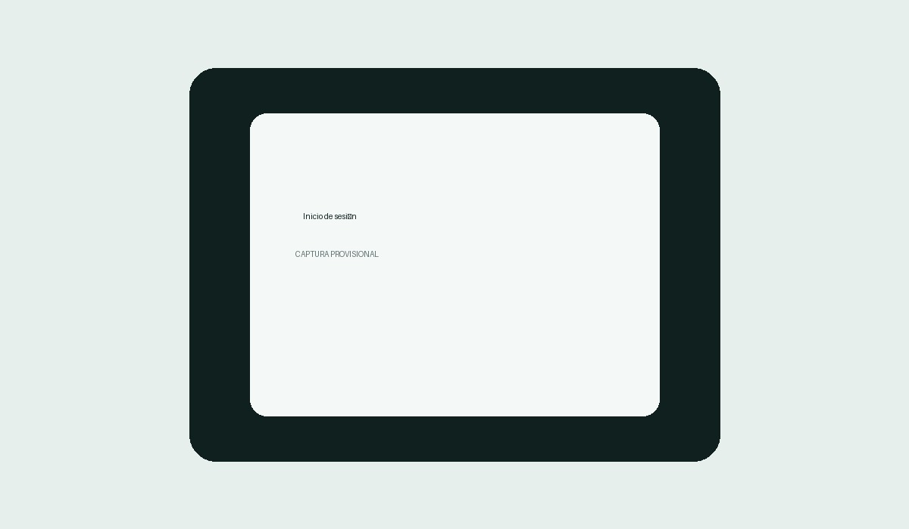

Importante antes de instalar
Información sobre la advertencia que puede mostrar Google Play Protect.
¿Por qué puede aparecer una advertencia?
TerryGes se distribuye de forma controlada y fuera de Google Play. Por ese motivo, Android puede mostrar una advertencia indicando que no reconoce previamente al desarrollador o que la aplicación procede de una fuente externa.
Esta advertencia no significa por sí sola que TerryGes tenga un virus. Google Play Protect realiza comprobaciones de seguridad y puede mostrar avisos cuando una aplicación se instala fuera de Google Play.
Instala la aplicación únicamente desde el enlace oficial proporcionado por el responsable de TerryGes y verifica que el archivo corresponda a la versión indicada en esta página.
¿Qué es TerryGes?
TerryGes centraliza la gestión de ciudades, sectores, divisiones y territorios, permitiendo trabajar con información territorial de forma organizada y controlada.
Territorios
Consulta y organización de territorios y su información asociada.
Asignaciones
Gestión de solicitudes, asignaciones y territorios correspondientes a cada usuario.
Sincronización
Arquitectura preparada para trabajar con información local y servicios remotos.
Mapas
Visualización territorial y ubicación geográfica para apoyar la gestión.
Acceso controlado
El acceso a las funciones de la aplicación está destinado a usuarios autorizados.
Administración
Herramientas administrativas concentradas en el área de Gestión.
Vista de la aplicación
Estas imágenes son provisionales. Sustitúyelas por capturas reales de TerryGes.

Descarga oficial
Descarga TerryGes únicamente desde el enlace oficial proporcionado para los usuarios autorizados.
Descargar APK AndroidArchivo: TerryGes.apk · Versión: 1.1.0
Información de la aplicación
Acceso para usuarios autorizados
TerryGes está destinado a un grupo controlado de usuarios. El enlace de descarga puede protegerse mediante los permisos de Google Drive, mientras que el acceso a la aplicación se controla mediante autenticación.